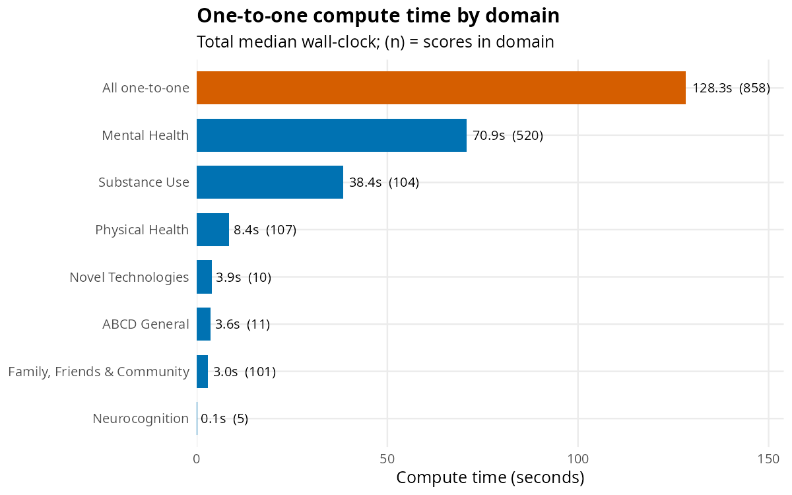
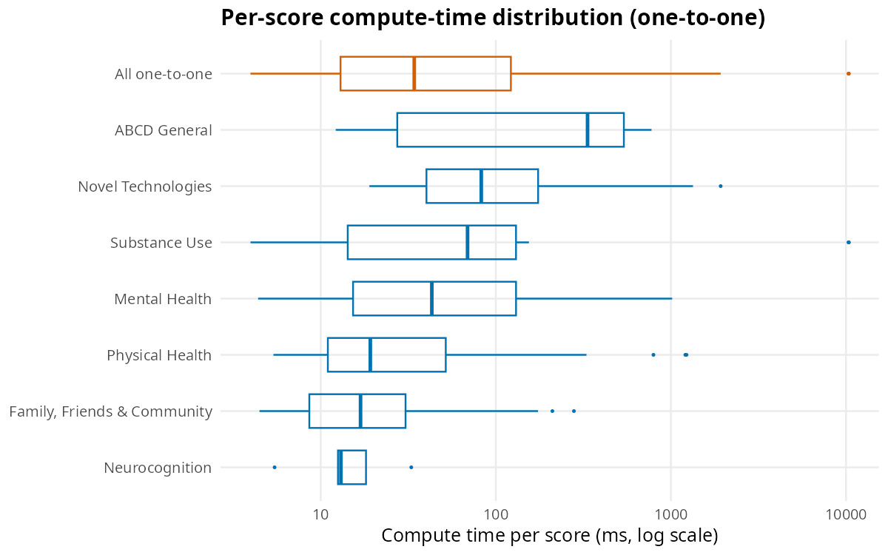
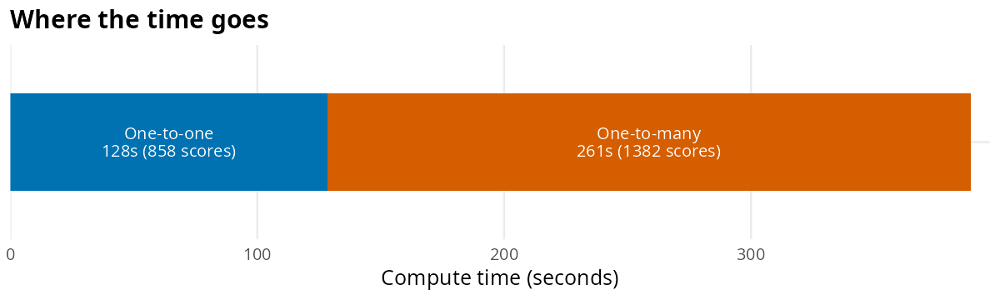

ABCDscores is designed to compute the full set of
summary scores for a complete ABCD Study® data release on an
ordinary laptop, without multi-core parallelization or specialized
hardware. This article reports a reproducible benchmark that quantifies
that claim on the ABCD 7.0 release.
Method
The benchmark loads each tabulated 7.0 table, strips the pre-computed summary columns the release already ships, and then times only the execution of the score-computing functions — data loading, joining, and result bookkeeping are excluded, since those reflect storage/IO rather than the scoring code. Each score’s computation is repeated three times and summarized by the median; all timings are single-threaded.
Two classes of function are reported separately:
-
One-to-one functions — one exported
compute_*()function produces one score (the large majority of the package). - One-to-many functions — a compact, configuration-driven routine produces many scores at once (medications, SDSU, SUI, family history).
The compute_*_all() convenience wrappers are
not timed on their own, as they merely re-run the
one-to-one functions. TLFB and Fitbit scores are
excluded: their inputs are raw daily-event and device-epoch
data that are not part of the tabulated release (only their
pre-computed summaries ship), so they cannot be recomputed from tabular
data.
All numbers below were measured single-threaded on an Intel Core i7-13700H (20 logical cores, 30.5 GB RAM), Linux, R 4.6.1.
Headline result
- 858 one-to-one scores computed in 128.3 s
- 1,382 one-to-many scores computed in 260.6 s
- All 2,240 scores in 388.9 s (≈6.5 min) of single-threaded compute time
- Peak R memory 9,100 MB; one-time data load (excluded above) 40.8 s
In outline, the timing loop is:
arrow::set_cpu_count(1L) # single-threaded
# per table: load, strip only the target score, time each fn over 3 reps
for (tbl in tables) {
d0 <- load_joined(c(tbl, "ab_g_stc", source_tables_of(tbl)))
for (fn in one_to_one_fns_of(tbl)) {
d <- dplyr::select(d0, !dplyr::any_of(score_of(fn))) # strip target only
time_ms(function() get(fn)(d), reps = 3) # median of 3
}
}
# one-to-many routines timed via their shipped configs, e.g. family history:
# time_ms(function() purrr::map(famhx_config$call, ~ eval(parse(text = .x))))One-to-one timing by domain
The bar at the top pools all domains to show the overall one-to-one compute time.

How fast is a one-to-one score?
Across the 858 one-to-one functions, the median score computes in 34 ms; the middle 90% fall between 6 and 610 ms, with a full range of 4–10,386 ms. The box at the top pools every one-to-one score across all domains.

One-to-many functions
Configuration-driven routines produce many scores per call. Because each is one bulk operation over the whole cohort, its cost is reported as a whole and as an average per score produced.
| Group | Table | Scores | Time (s) | Per score (ms) |
|---|---|---|---|---|
| meds:ph_p_meds:catg | ph_p_meds | 330 | 9.99 | 30.3 |
| meds:ph_p_meds:estuse | ph_p_meds | 285 | 12.62 | 44.3 |
| meds:ph_y_meds:catg | ph_y_meds | 200 | 3.40 | 17.0 |
| meds:ph_y_meds:estuse | ph_y_meds | 190 | 2.03 | 10.7 |
| meds:ph_p_dhx:catg | ph_p_dhx | 40 | 0.50 | 12.6 |
| famhx | mh_p_famhx | 96 | 91.26 | 950.7 |
| sui | su_y_sui | 100 | 1.30 | 13.0 |
| sdsu:use_yn | su_y_dyn/stc | 47 | 67.08 | 1427.3 |
| sdsu:onset_event | su_y_dyn/stc | 47 | 32.88 | 699.5 |
| sdsu:onset_age | su_y_dyn/stc | 47 | 39.49 | 840.2 |
Summary
In total, ABCDscores computed 2,240 summary scores in 388.9 s (≈6.5 min) of single-threaded compute time: 858 one-to-one functions in 128.3 s and 1,382 one-to-many scores in 260.6 s.
| Class | Scores | Compute time (s) | Share of time (%) |
|---|---|---|---|
| One-to-one | 858 | 128.3 | 33 |
| One-to-many | 1,382 | 260.6 | 67 |
| All | 2,240 | 388.9 | 100 |
